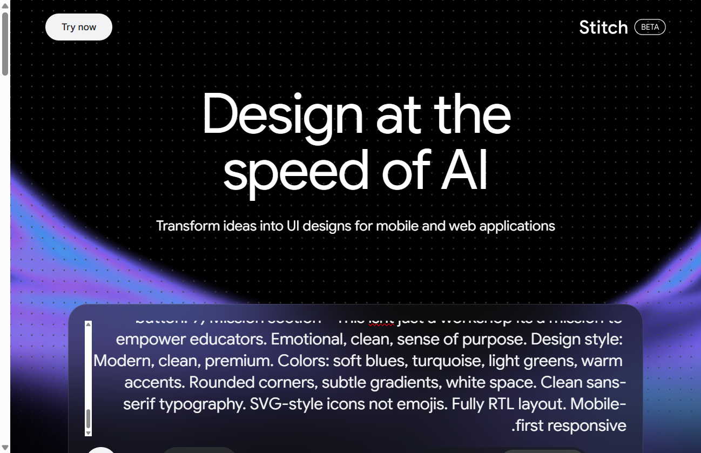
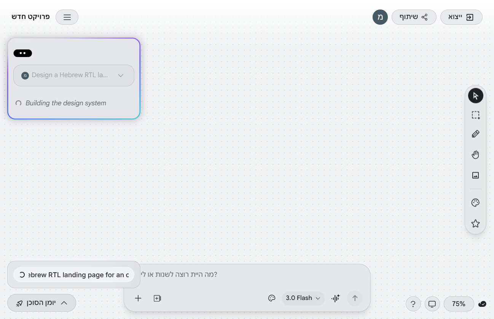
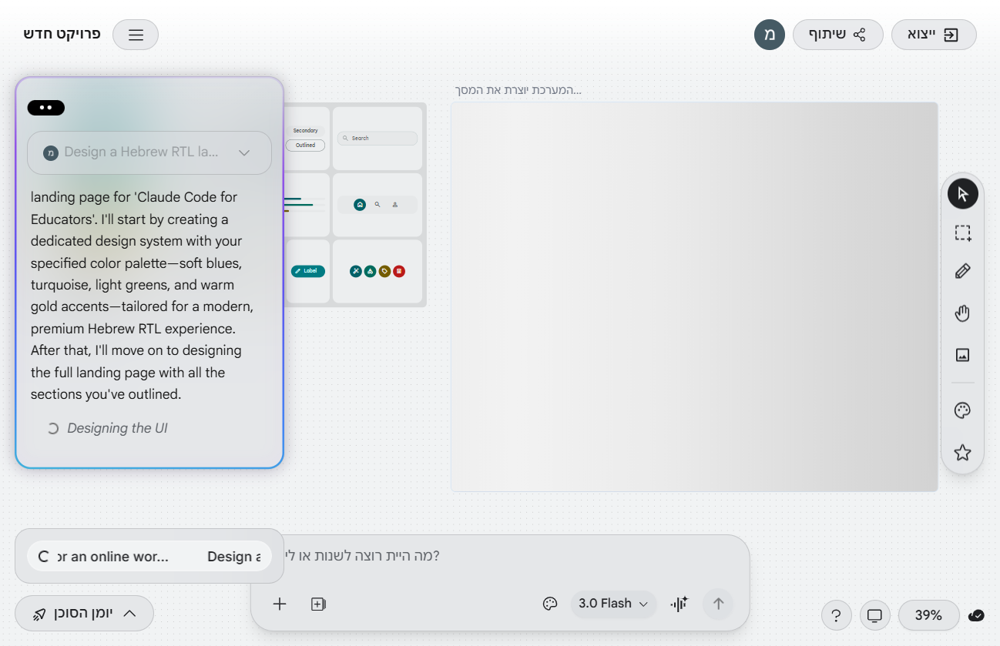
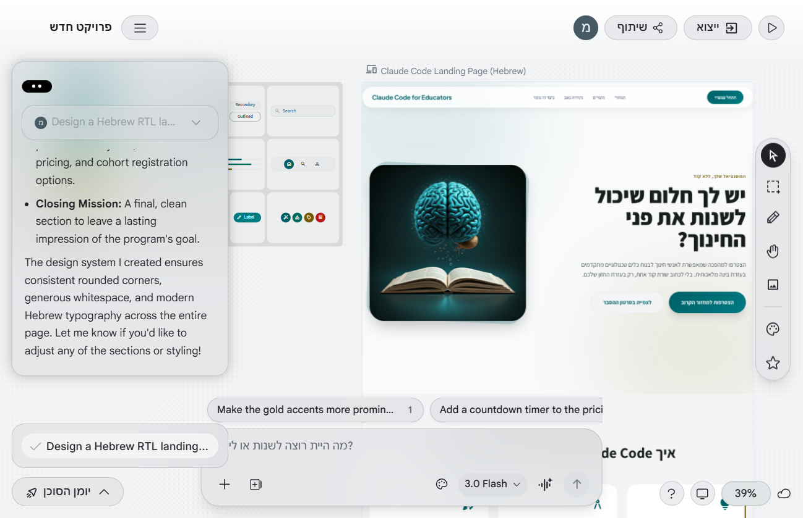
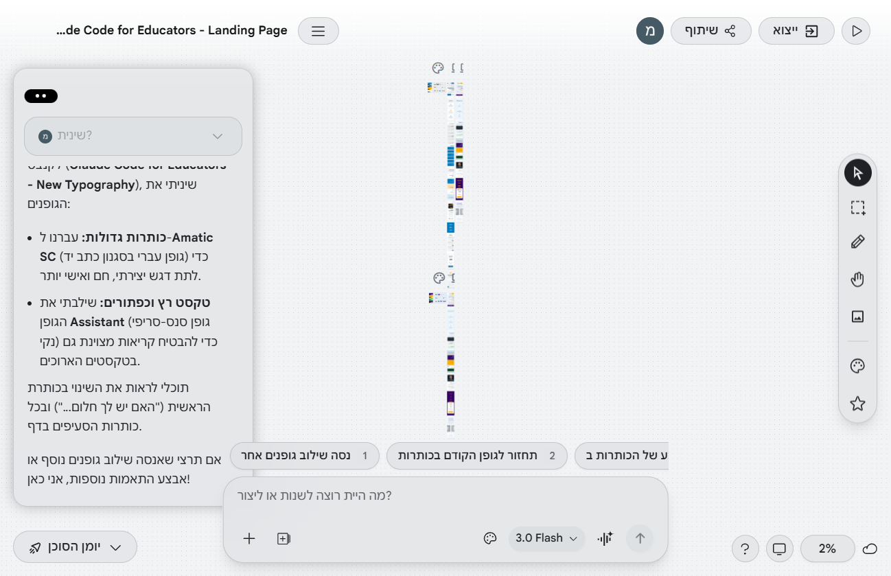
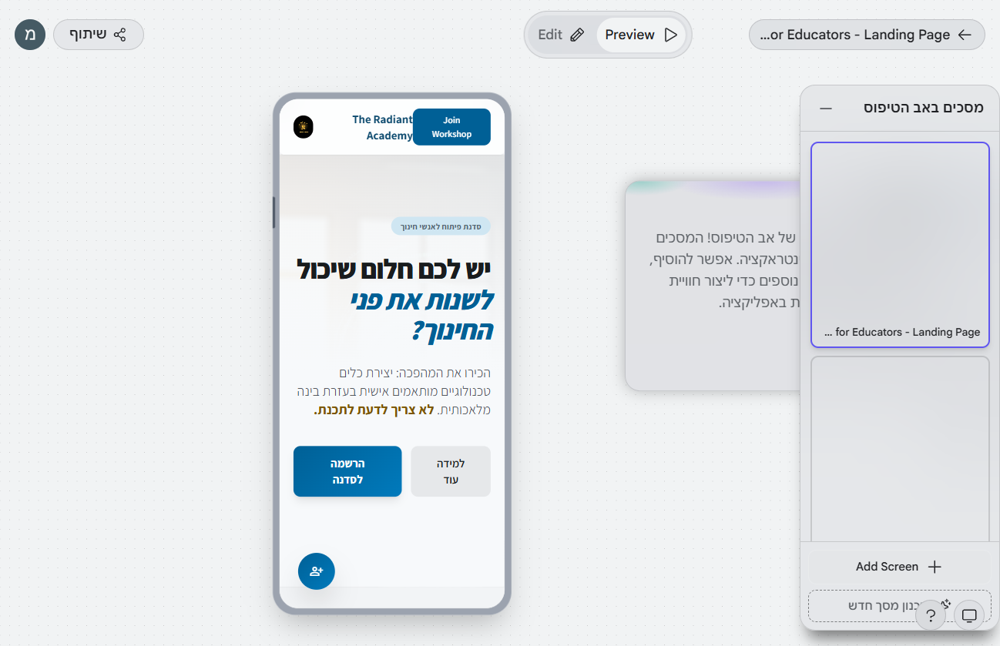
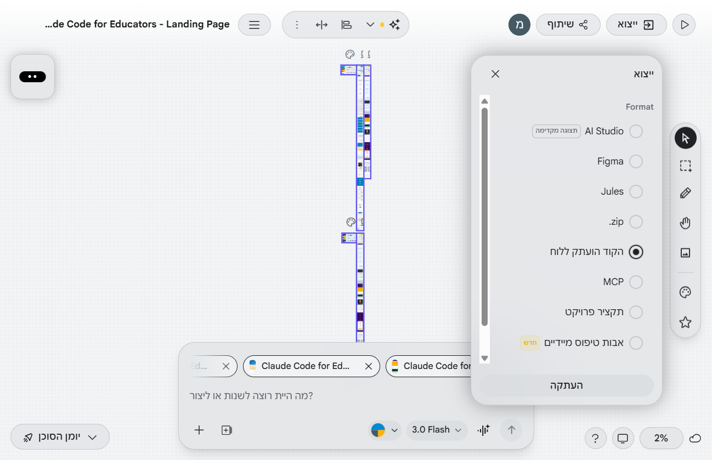
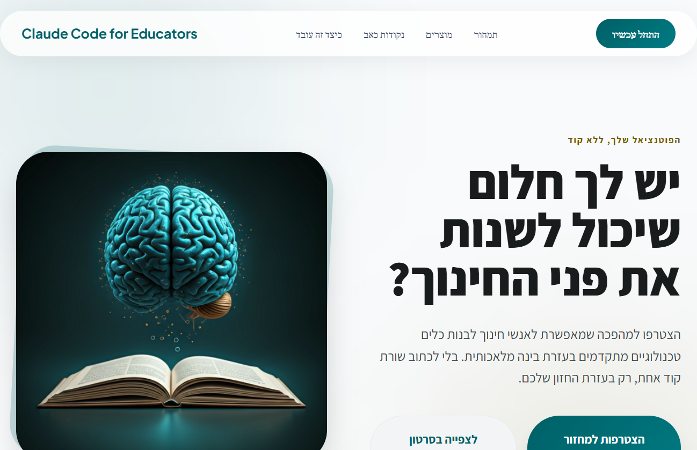
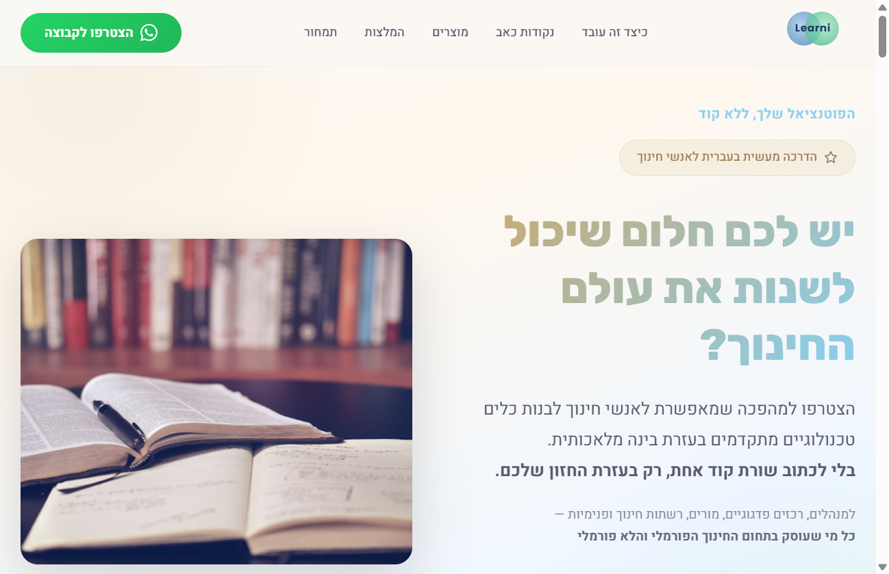

איך עיצבתי דף נחיתה מקצועי ב-4 דקות
בלי Figma, בלי Canva, בלי מעצב
Learni | הדרכה של 5 דקות שתשנה לכם את העבודה
1
מה זה Stitch
2
איך עובדים
3
יתרונות ומגבלות
4
ה-Flow הנכון
מה זה Google Stitch?
צריכים דף מעוצב, אין מעצב, אין תקציב, אין זמן? Stitch פותר את זה.
עיצוב מ-AI
כותבים תיאור טקסטואלי ומקבלים עיצוב מלא של אתר
פלטפורמת עיצוב
לא רק mockup — עורך עיצוב מלא עם Design System
בחינם (בטא)
חלק מאקוסיסטם Google נדרש חשבון Google בלבד

Stitch נמצא בבטא — הכל עדיין משתנה, אבל כבר אפשר להשתמש ולקבל תוצאות מרשימות.
איך נכנסים?
3 שלבים ואתם בפנים
1
נכנסים לאתר
גולשים ל-stitch.withgoogle.com ולוחצים "Try now"
2
מתחברים עם Google
חשבון Google רגיל — אותו חשבון שמשתמשים בו ל-Gmail
3
מתחילים פרויקט חדש
כותבים תיאור של מה שרוצים לעצב — ו-Stitch בונה עיצוב מלא

2
איך עובדים עם Stitch?
מהפרומפט הראשון ועד לעיצוב מוכן
שלב 1: כותבים פרומפט
מתארים מה רוצים לעצב — וה-AI עושה את השאר
עצב לי דף נחיתה בעברית לסדנה אונליין למורים. צבעים: טורקיז, תכלת, רקע בהיר. עיצוב מודרני, נקי ומקצועי. תמיכה ב-RTL.
בונה מערכת עיצוב (צבעים, גופנים, כפתורים)...
מעצב את הדפים לפי התיאור שלך...

טיפ: Stitch עובד עם עברית, אבל פרומפט באנגלית נותן לפעמים תוצאות יפות יותר. בכל מקרה — ציינו RTL וHebrew, ובקשו גופנים עבריים כמו Heebo או Rubik — אחרת תקבלו גופנים שבורים.
טיפים לפרומפט מנצח
4 כללים + 3 פרומפטים מוכנים להעתקה
1
תארו סגנון עיצוב
"מודרני, נקי, פינות מעוגלות"
2
ציינו צבעים
"טורקיז, תכלת, רקע לבן-קרם"
3
בקשו RTL + גופנים עבריים
"RTL, עברית, גופן Heebo"
4
ציינו כמה דפים
"דף אחד בלבד" / "2 דפים"
3 פרומפטים מוכנים — לחצו להעתקה:
דף הרשמה לסדנה: עצב דף נחיתה בעברית לסדנה למורים. צבעים: טורקיז ותכלת, רקע בהיר. סעיפים: כותרת, 3 יתרונות, טופס הרשמה. גופן Heebo, RTL, דף אחד.
לוח מודעות בית ספר: עצב אפליקציית לוח מודעות לבית ספר. 2 מסכים: דשבורד עם אירועים בכרטיסים + דף אירוע בודד. צבעוני אבל לא ילדותי, גופן Heebo, RTL.
פורטפוליו מורה: עצב אתר פורטפוליו למומחית טכנולוגיה חינוכית. דף אחד ארוך: Hero, אודות, מיומנויות, 6 פרויקטים, טופס יצירת קשר. מינימלי ומתוחכם, גופן Heebo, RTL.
ככל שהפרומפט מפורט יותר, התוצאה טובה יותר. אם התוצאה לא טובה — התחילו פרויקט חדש. עובד הכי טוב ב-Chrome.
שלב 2: מקבלים מערכת עיצוב
Design System — הכללים הקבועים של האתר: צבעים, גופנים, כפתורים
מה נוצר אוטומטית?
פלטת צבעים מותאמת
גופנים (כותרות + טקסט)
כפתורים ורכיבים
רכיבים מוכנים (Material Design 3)
דפים מעוצבים — אתר או אפליקציה

שלב 3: עריכה ושיחה
מדברים עם Stitch בצ'אט ומבקשים שינויים
מה אפשר לעשות?
צ'אט — לבקש שינויים בשיחה
עריכה ישירה — ללחוץ על אלמנט ולשנות
תמונה כהשראה — לגרור צילום מסך ו-Stitch יעצב לפיו
תמונות AI — יצירת תמונות עם Imagen של Google
שיתוף — לשתף פרויקט עם עמיתים (כמו Google Docs)
Stitch מציע שיפורים בעצמו — כפתורי הצעות מופיעים בתחתית הצ'אט.

שלב 4: תצוגה מקדימה וייצוא
בודקים את התוצאה ומוציאים החוצה
תצוגה מקדימה
דסקטופ
מובייל
אינטראקטיבי (Prototype)
אפשרויות ייצוא
העתקת קוד — קוד HTML ישירות ללוח
Figma — ייצוא ישיר לכלי עיצוב
Google IDX — המשך עבודה בסביבת פיתוח
ZIP — הורדת כל הקבצים למחשב


3
יתרונות ומגבלות
מתי כדאי להשתמש ב-Stitch, ומתי לא
למה להשתמש ב-Stitch?
6 סיבות טובות
מהיר
עיצוב מלא תוך דקות, לא שעות
מקצועי
Design System אמיתי עם צבעים, גופנים ורכיבים
קל לשימוש
לא צריך ניסיון בעיצוב רק לתאר מה רוצים
אינטגרציה
ייצוא ל-Figma, קוד, ZIP והעתקה ללוח
עברית
תומך ב-RTL עם הנחיה נכונה
בחינם
כרגע בבטא שימוש חופשי לגמרי
מגבלות ופתרונות
מה צריך לדעת לפני שמתחילים
מגבלות
תוכן גנרי באנגלית — לא עברית אמיתית
RTL לא מושלם — צריך בדיקה ותיקון
בטא — לא יציב תמיד
הקוד שנוצר — לא מוכן לשימוש כמו שהוא
פתרונות
להשתמש כהשראה בלבד — לא כתוכן סופי
לבנות תוכן עברי בנפרד וליישם את העיצוב
היסטוריית גרסאות — Stitch שומר ואפשר לחזור אחורה
לעבוד דרך Claude Code — תיקון גופנים, תוכן ועיצוב
Stitch מול Canva — כלים שונים למטרות שונות
Canva
פוסטרים, מצגות, פלייר
תמונה סטטית / PDF
תבניות מוכנות ענקיות
Google Stitch
אתרים ואפליקציות שלמות
קוד HTML חי + Design System
AI מייצר מאפס לפי תיאור
5 תרחישים שבהם Stitch עדיף:
דף הרשמה ליום פתוחפורטפוליו מקצועי למורהדף פרויקט בגרותחוברת דיגיטלית להוריםלוח מודעות בית ספרי
Canva = פוסטים ופלייר. Stitch = אתרים ואפליקציות. כלים משלימים, לא מתחרים.
4
ה-Flow הנכון
Claude Code + Stitch = שילוב מנצח
הטעות הנפוצה
למה לא להתחיל מ-Stitch?
מתחילים מ-Stitch
מקבלים עיצוב יפה עם טקסט מילוי גנרי
תוכן גנרי באנגלית
בלי הזהות והמותג שלכם
צריך לשכתב 80% מהתוצר
מתחילים מתוכן
בונים תוכן אמיתי בעברית
RTL מושלם מהרגע הראשון
המותג והזהות שלכם — בתוך הדף
Stitch משמש רק להשראה ויזואלית

הפלט הגולמי של Stitch — עיצוב יפה, אבל תוכן גנרי באנגלית
ה-Flow הנכון: Claude Code + Stitch
תוכן קודם, עיצוב אחר כך
Claude Code
כלי AI שבונה דפים מוכנים מתיאור טקסטואלי
1
בניית תוכן אמיתי
HTML מלא עם טקסטים, קישורים, טפסים
2
פרסום לאתר חי
GitHub Pages — יש URL אמיתי
3
העתקת URL
הדף החי ישמש כבסיס ל-Stitch
Google Stitch
4
הדבקת URL ב-Stitch
מבקשים עיצוב מחדש של הדף
5
צילום מסך כהשראה
לוקחים רעיונות ל-layout, צבעים, רכיבים
6
חזרה ל-Claude Code
תיקון גופנים, תוכן עברי, התאמת עיצוב — הכל דרך Claude Code
הכלל: תוכן קודם, עיצוב אחר כך. Stitch = השראה ויזואלית. Claude Code = הבנייה בפועל + תיקון גופנים, תוכן ועיצוב.
לפני ואחרי — גררו לראות
אותו פרויקט. אותו יום. השילוב הנכון.

Stitch בלבד
+ Claude Code
Stitch נותן השראה מעולה ל-layout, צבעים ורכיבים. אבל התוכן והזהות שלכם — רק אתם יכולים ליצור.
5
סיכום
3 דברים לזכור מההדרכה הזו
3 דברים לזכור
Stitch = השראה ויזואלית
כלי מעולה לקבלת רעיונות עיצוב מהירים
תוכן קודם
תמיד לבנות תוכן אמיתי לפני שמשתמשים ב-Stitch
שילוב חכם
Claude Code לתוכן + Stitch להשראה = מקצועי
Stitch הוא עוד כלי בארגז הכלים. לא תחליף, אלא משלים. הכוח האמיתי הוא בשילוב הנכון.
נסו בעצמכם
1
היכנסו ל-stitch.withgoogle.com
התחברו עם חשבון Google (עובד הכי טוב ב-Chrome)
2
העתיקו את אחד מהפרומפטים המוכנים
חזרו לשקף הפרומפטים, העתיקו, הדביקו ב-Stitch
אתגר 5 דקות
כתבו פרומפט אחד, צלמו מסך של התוצאה, ושלחו לי. כל מי ששולח — מקבל פידבק אישי + הטמעה ב-Claude Code.
התוצר הכי טוב מתחיל בתוכן אמיתי —
ה-AI רק עוזר לעצב אותו.